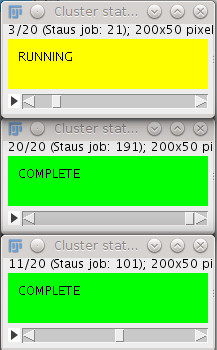

| Profile | The cluster that you are going to use |
| Username | Username to use to access the cluster via SSH |
| Password | Password to use to access the cluster |
|  | |

| Profile | Is the name that identify this profile |
| Address | Address to access the cluster via SSH |
| Batch | Batch system used by the cluster. Actually only LSF is implemented |
| run_dir | It is where the plugins is suppose to run and produce IO (where the file will be written). The (*) is a wild card for your username |
| queues | List of all the queues present on the cluster and open for the computation |
| compression | List of all the compression algorithm present on the cluster |
| name | name of the queue |
| limit | maximum time you can run on a job on that queue |
| Batch | Batch system used by the cluster. Actually only LSF is implemented |
| hardware | which kind of hardware is using that queue |
| Compression | choose from the list the compression algorithm (command-line) press add to add it to the list |